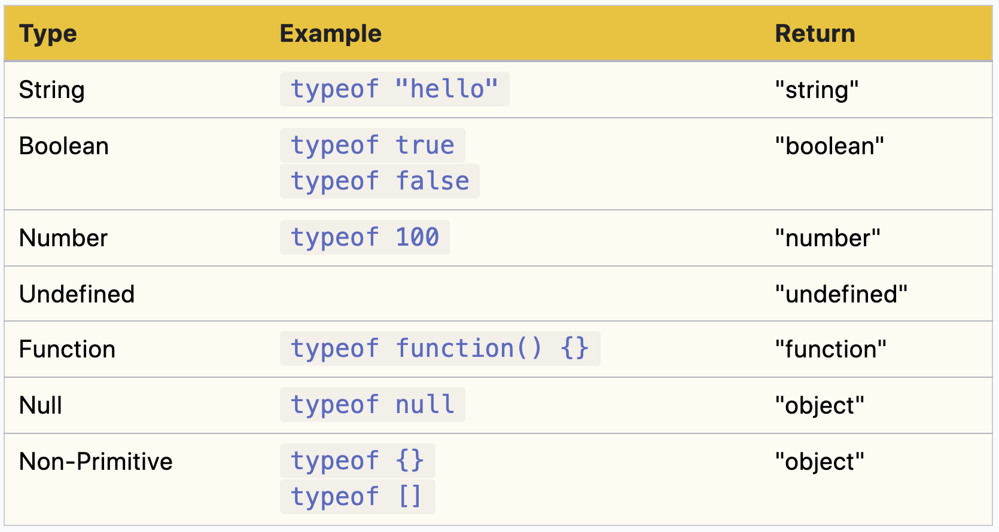
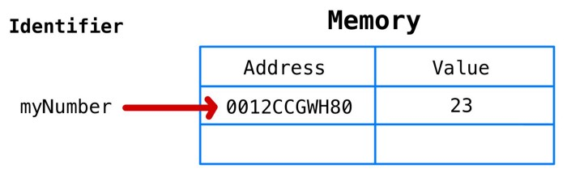
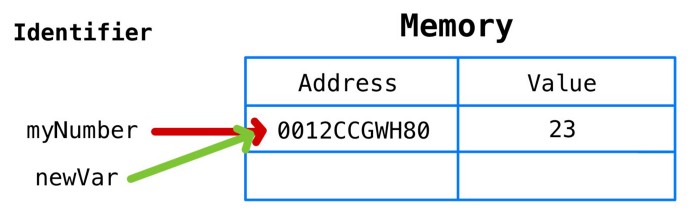
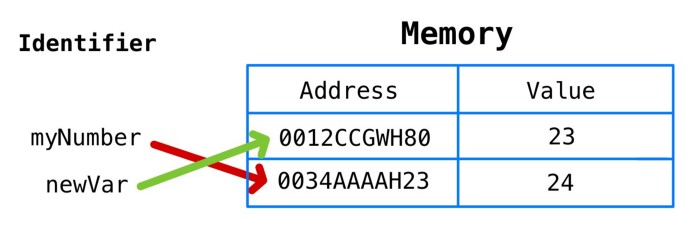
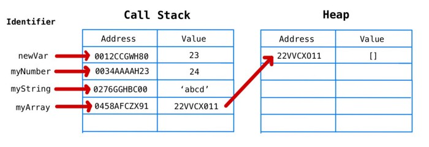
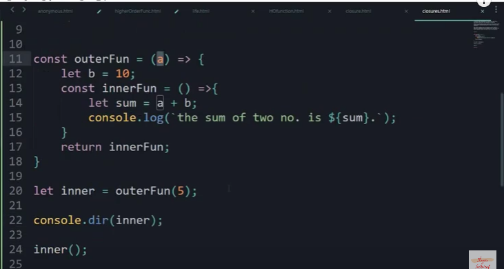

Replace particular html tags using javascript
var d = document.createElement('div');
d.innerHTML = e.innerHTML;
e.parentNode.replaceChild(d, e);
classList add remove toggle
document.getElementById("myDIV").classList.add("mystyle");document.getElementById("myDIV").classList.add("mystyle", "anotherClass", "thirdClass");
document.getElementById("myDIV").classList.remove("mystyle");
document.getElementById("myDIV").classList.remove("mystyle", "anotherClass", "thirdClass");
document.getElementById("myDIV").classList.toggle("newClassName");
Javascript Info
symbol
FINALLY - ES6 Symbols are Explained!typeof
use strict
Nullish coalescing operator
'??' - a ?? b expands to a !== null && a !== undefined ? a : bTranspilers - A transpiler is a special piece of software that can parse (“read and understand”) modern code, and rewrite it using older syntax constructs, so that the result would be the same.
E.g. JavaScript before year 2020 didn’t have the “nullish coalescing operator” ??. So, if a visitor uses an outdated browser, it may fail to understand the code like height = height ?? 100.
transpiler
A transpiler would analyze our code and rewrite height ?? 100 into (height !== undefined && height !== null) ? height : 100.Babel is one of the most prominent transpilers
Modern project build systems, such as webpack, provide means to run transpiler automatically on every code change, so it’s very easy to integrate into development process.
Polyfills
Polyfills - In some (very outdated) JavaScript engines, there’s no Math.trunc, so such code will fail.A script that updates/adds new functions is called “polyfill”. It “fills in” the gap and adds missing implementations.
Two interesting libraries of polyfills are:
core js that supports a lot, allows to include only needed features.
polyfill.io service that provides a script with polyfills, depending on the features and user’s browser.
Objects
Object Oriented JavascriptJavaScript’s object model
property attribute Other than the [[Value]] itself, the spec defines these properties:
[[Writable]] which determines whether the property can be reassigned to,
[[Enumerable]] which determines whether the property shows up in for-in loops,
and [[Configurable]] which determines whether the property can be deleted.
Iterable vs Enumerable in JavaScript
Different Ways to Duplicate Objects in JavaScript
primitive data

object

shallow copy deep copy

Usually, the figure brackets {...} are used. That declaration is called an object literal.
multiword property names
let user = {
name: "John",
age: 30,
"likes birds": true // multiword property name must be quoted
};
“trailing” or “hanging” comma
let user = {
name: "John",
age: 30,
}
Square brackets
let user = {};
// set
user["likes birds"] = true;
Square brackets also provide a way to obtain the property name as the result of any expression – as opposed to a literal string – like from a variable as follows:
let key = "likes birds";
// same as user["likes birds"] = true;
user[key] = true;
the variable key may be calculated at run-time or depend on the user input
let key = prompt("What do you want to know about the user?", "name");
// access by variable
alert( user[key] ); // John (if enter "name")
Computed properties
let fruit = prompt("Which fruit to buy?", "apple");
let bag = {
[fruit]: 5, // the name of the property is taken from the variable fruit
};
alert( bag.apple ); // 5 if fruit="apple"
Property value shorthand
function makeUser(name, age) {
return {
name: name,
age: age,
// ...other properties
};
} let user = makeUser("John", 30);
alert(user.name); // John
Instead of name:name we can just write name, like this:
function makeUser(name, age) {
return {
name, // same as name: name
age, // same as age: age
// ...
};
Property existence test, “in” operator
"key" in object
let user = { name: "John", age: 30 };
alert( "age" in user ); // true, user.age exists
alert( "blabla" in user ); // false, user.blabla doesn't exist
Why does the in operator exist? Isn’t it enough to compare against undefined?
Well, most of the time the comparison with undefined works fine. But there’s a special case when it fails, but "in" works correctly.
It’s when an object property exists, but stores undefined:
let obj = {
test: undefined
};
alert( obj.test ); // it's undefined, so - no such property?
alert( "test" in obj ); // true, the property does exist!
}
The “for…in” loop
let user = {
name: "John",
age: 30,
isAdmin: true
};
for (let key in user) {
// keys
alert( key ); // name, age, isAdmin
// values for the keys
alert( user[key] ); // John, 30, true
}
Ordered like an object
let codes = {
"49": "Germany",
"41": "Switzerland",
"44": "Great Britain",
// ..,
"1": "USA"
};
for (let code in codes) {
alert(code); // 1, 41, 44, 49
}
Object references and copying
A variable assigned to an object stores not the object itself, but its “address in memory” – in other words “a reference” to it.let user = { name: "John" };
let admin = user; // copy the reference
let user = { name: 'John' };
let admin = user;
admin.name = 'Pete'; // changed by the "admin" reference
alert(user.name); // 'Pete', changes are seen from the "user" reference
Comparison by reference
let a = {};
let b = a; // copy the reference
alert( a == b ); // true, both variables reference the same object
alert( a === b ); // true
two independent objects
let a = {};
let b = {}; // two independent objects
alert( a == b ); // false
Cloning and merging, Object.assign
let user = {
name: "John",
age: 30
};
let clone = {}; // the new empty object
// let's copy all user properties into it
for (let key in user) {
clone[key] = user[key];
}
// now clone is a fully independent object with the same content
clone.name = "Pete"; // changed the data in it
alert( user.name ); // still John in the original object
Object.assign(dest, [src1, src2, src3...]) - copy paste content
Objects are assigned and copied by reference. In other words, a variable stores not the “object value”, but a “reference” (address in memory) for the value. So copying such a variable or passing it as a function argument copies that reference, not the object itself.
All operations via copied references (like adding/removing properties) are performed on the same single object.
To make a “real copy” (a clone) we can use Object.assign for the so-called “shallow copy” (nested objects are copied by reference) or a “deep cloning” function, such as _.cloneDeep(obj).
let permissions1 = { canView: true };
let permissions2 = { canEdit: true };
// copies all properties from permissions1 and permissions2 into user
Object.assign(user, permissions1, permissions2);
// now user = { name: "John", canView: true, canEdit: true }
If the copied property name already exists, it gets overwritten:
Nested cloning
Until now we assumed that all properties of user are primitive. But properties can be references to other objects. What to do with them?
let user = {
name: "John",
sizes: {
height: 182,
width: 50
}
};
let clone = Object.assign({}, user);
alert( user.sizes === clone.sizes ); // true, same object sizes object is not copied. It is nested object
// user and clone share sizes
user.sizes.width++; // change a property from one place
alert(clone.sizes.width); // 51, see the result from the other one
Object to primitive conversion
Modern Javascript Objects 5 Object to primitive conversion What happens when objects are added obj1 + obj2, subtracted obj1 - obj2 or printed using alert(obj)?when addition and substraction is used on objects it is converted to number
In that case, objects are auto-converted to primitives, and then the operation is carried out.
In the chapter Type Conversions we’ve seen the rules for numeric, string and boolean conversions of primitives. But we left a gap for objects. Now, as we know about methods and symbols it becomes possible to fill it.
All objects are true in a boolean context. There are only numeric and string conversions.
The numeric conversion happens when we subtract objects or apply mathematical functions. For instance, Date objects (to be covered in the chapter Date and time) can be subtracted, and the result of date1 - date2 is the time difference between two dates.
As for the string conversion – it usually happens when we output an object like alert(obj) and in similar contexts. obj will be converted to string as alert takes string
Module
JavaScript ES6 Modules15 JavaScript concepts that every JavaScript Programmer must know
- JavaScript Prototype
- JavaScript(ES6) Class
- IIFE
- understanding Scope
- JavaScript Closures
- The Module Pattern
- Hoisting
- Currying
- Memoization
- The apply, call, and bind methods
- Polymorphism in JavaScript
- Asynchronous Js
- Callback Function
- Understand Promises
- Async & Await
Execution context
Understanding JavaScript Execution Context and How It Relates to Scope and the `this` Context Execution Context and Execution Stack in JavaScript in Hindi | Advanced JavaScriptCall Stack & Execution Context Explained With Live Example | Advanced JavaScript
Hoisting in JavaScript in Hindi | Function Hoisting in JavaScript
How JavaScript Works Behind the Scenes
Javascript Memory model
JavaScript’s Memory Modellet myNumber = 23
let newVar = myNumber
myNumber = myNumber + 1
primitive data types in JS are immutable , when “myNumber + 1” resolves to “24”, JS will allocate a new address in memory, store 24 as its value, and “myNumber” will point to the new address.
call stack and the heap
The call stack is where primitives are stored (in addition to function calls). A rough representation of the call stack after declaring the variables in the previous section is below.
The heap is where non-primitives are stored. The key difference is that the heap can store unordered data that can grow dynamically—perfect for arrays and objects.
let myArray = []
Lexical scope - closure

Higher order function
Object Oriented Javascript
Hashes and associative arrays
In some programming languages, there is a distinction between:
A regular array, also called an indexed or enumerated array (the keys are numbers)
An associative array, also called a hash or a dictionary (the keys are strings)
JavaScript uses arrays to represent indexed arrays and objects to represent associative arrays. If you want a hash in JavaScript, you use an object.
Accessing an object's properties
There are two ways to access the property of an object:
Using the square bracket notation, for example, hero['occupation']
Using the dot notation, for example, hero.occupation
Calling an object's methods
hero.say('a', 'b', 'c');
hero['say']();
Deleting a property:
delete hero.name;
Constructor functions
function Hero() {this.occupation = 'Ninja';
}
function Hero(name) {
this.name = name;
this.occupation = 'Ninja';
this.whoAreYou = function () {
return "I'm " +
this.name +
" and I'm a " +
this.occupation;
};
}
If you call a function that is designed to be a constructor but you omit the new operator, it is not an error. However, it doesn't give you the expected result:
> var h = Hero('Leonardo');> typeof h;
"undefined"
What happened here? There is no new operator, so a new object was not created. The
function was called like any other function, so the variable h contains the value that the
function returns. The function does not return anything (there's no return function), so it
actually returns undefined, which gets assigned to the variable h.
In this case, what does this refer to? It refers to the global object.
The constructor property
When an object is created, a special property is assigned to it behind the scenes–theconstructor property. It contains a reference to the constructor function used to create
this object.
Objects
Continuing from the previous example:
> h2.constructor;
function Hero(name) {
this.name = name;
}
As the constructor property contains a reference to a function, you might as well call this
function to produce a new object. The following code is like saying, “I don't care how object
h2 was created, but I want another one just like it”:
> var h3 = new h2.constructor('Rafaello');
> h3.name;
"Rafaello"
If an object was created using the object literal notation, its constructor is the built-in
Object() constructor function (there is more about this later in this chapter):
> var o = {};
>o.constructor;
function Object() { [native code] }
> typeof o.constructor;
"function"
The instanceof operator
With the instanceof operator, you can test whether an object was created with a specificconstructor function:
> function Hero() {}
> var h = new Hero();
> var o = {};
> h instanceof Hero;
true
> h instanceof Object;
true
> o instanceof Object;
true
Note that you don't put parentheses after the function name (you don't use h instanceof
Hero()). This is because you're not invoking this function, but just referring to it by name,
as with any other variable.
If you think about how objects are created inside constructor functions, you can imagine
that a variable called this is defined at the top of the function and then returned at the end.
Consider the following code:
function C() {
// var this = {}; // pseudo code, you can't do this
this.a = 1;
// return this;
}
‘this’ is actually a binding that is made when a function is invoked, not when it is declared. What ‘this’ references is determined entirely by the call-site where the function is called.
method inside object
(Lingo explainer for JavaScript n00bs: “method” is the name for a function contained within an object. “Callbacks” are anonymous functions passed as an argument into another function. Both are still ultimately just functions, though).Inferring object types
typeof returns an object when used with arrays. > Object.prototype.toString.call({}); "[object Object]" > Object.prototype.toString.call([]); "[object Array]"The language has 4 function invocation types:
Gentle Explanation of "this" in JavaScriptIn JavaScript the situation is different: this is the context of a function invocation (a.k.a. exection).
function invocation: alert('Hello World!')
method invocation: console.log('Hello World!')
constructor invocation: new RegExp('\\d')
indirect invocation: alert.call(undefined, 'Hello World!')
Each invocation type defines the context in its way, so this behaves differently than the developer expects.
const numbers = {
numberA: 5,
numberB: 10,
sum: function() {
console.log(this === numbers); // => true
function calculate() {
// this is window or undefined in strict mode
console.log(this === numbers); // => false
return this.numberA + this.numberB;
}
return calculate();
}
};
numbers.sum(); // => NaN or throws TypeError in strict mode
numbers.sum() is a method invocation on an object (see 3.) thus this equals number.
calculate() function is defined inside sum() , so you might expect to have this as numbers object in when invoking calculate() too.
calculate() is a function invocation (but not method invocation), thus here this is the global object window (case 2.1.) or undefined in strict mode (case 2.2.). Even if the outer function numbers.sum() has the context as numbers object, it doesn’t have influence here.
return calculate.call(this); can be used.
another solution is arrow function
const calculate = () => {
console.log(this === numbers); // => true
return this.numberA + this.numberB;
}
return calculate();
The arrow function resolves this lexically, or, in other words, uses this value of numbers.sum() method.
Arrow function
Arrow functions are always anonymous.Arrow functions do not have their own value of this. The value of this in an arrow function is inherited from the enclosing (lexical) scope.
A lexical scope is a scope that surrounds the function scope, and the dynamic scope is the scope that called the function (usually an object)
No parameters: () => {...}
One parameter: a => {...}
More than one parameters: (a,b) => {...}
Arrow functions can have both the statement block bodies as well as expression bodies:
n => { return n+n} //statement block
n =>n+n //expression
Both are equivalent but the second variation is concise and preferred.